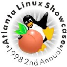

Copyright © 1998 Specialized Systems Consultants,
Inc.
For information regarding copying and distribution of this material see the
Copying License.
Table of Contents
September 1998 Issue #32
- The Front Page
- The MailBag
- More 2 Cent Tips
- News Bytes
- The Answer Guy, by James T. Dennis
- A Convenient and Practical Approach to Backing
Up Your Data, by Vincent Stemen
- Graphics Muse, by Michael J. Hammel
- Installing StarOffice 4.0 on Red Hat 5.1, by
William Henning
- An Interview with Linus Torvalds, by
Alessandro Rubini
- It Takes Its Toll, by Martin Vermeer
- Java and Linux, by Shay Rojansky
- Linux Installation Primer, by Ron Jenkins
- Linux Kernel Compilation Benchmark, by
William Henning
- Linux Kernel Installation,
by David A. Bandel
- New Release Reviews, by Larry Ayers
- Open Source Developer Day, by Phil Hughes
- Paradigm Shift, by Joe Barr
- Running Remote X Sessions on Windows
95/98/NT/Mac/PPC Clients, by Ron Jenkins
- Searching a Web Site with Linux,
by Branden Williams
- The Standard C Library for Linux, Part 3,
by James M. Rogers
- The Back Page
|
|

|

The Answer Guy
|

|
TWDT 1 (text)
TWDT 2 (HTML)
are files containing the entire issue: one in text format, one in HTML.
They are provided
strictly as a way to save the contents as one file for later printing in
the format of your choice;
there is no guarantee of working links in the HTML version.
Got any great ideas for improvements? Send your
comments, criticisms, suggestions
and ideas.
This page written and maintained by the Editor of Linux Gazette,
gazette@linuxgazette.net